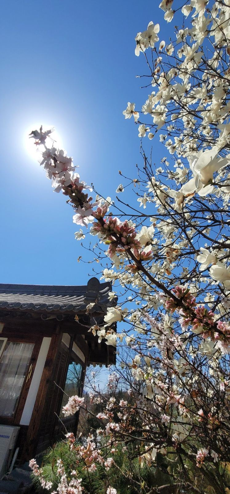

고재와 황토의 숨결
세월을 견뎌온 고재 서까래와 흙벽이 자연의 숨결을 그대로 머금고 있어, 계절마다 쾌적하고 깊은 안락함을 전합니다.
오랜 세월을 견뎌온 고재 서까래와 흙벽의 온기,
차담옥이 지향하는 고요한 머무름과 비움의 미학을 전합니다.

차를 우리고 나누는 고요한 담소 속에서,
오래된 한옥이 건네는 계절의 온기를 마주합니다.

차담옥(茶談屋)은 한옥이 지닌 시간의 결을 해치지 않으면서, 오늘의 휴식에 어울리는 편안함을 정갈하게 담아낸 독채 스테이입니다.
세월을 품은 목재와 흙벽, 절제된 편의가 균형을 이루어 문을 열고 들어서는 순간부터 마음의 속도를 자연스레 낮춰줍니다.
아침에는 처마 끝으로 스며드는 맑은 볕을, 밤에는 마당 위로 내려앉는 고요한 정적을 오롯이 마주해 보세요.
차담옥에서의 하루는 바쁜 여행보다 깊은 쉼에 가깝습니다.

세월을 견뎌온 고재 서까래와 흙벽이 자연의 숨결을 그대로 머금고 있어, 계절마다 쾌적하고 깊은 안락함을 전합니다.
정성껏 비치한 다기 세트와 잎차, 잔잔한 빛이 스며드는 창호 너머로 일상의 번잡함을 잠시 내려놓습니다.
대청마루부터 침실, 주방, 야외 마당과 바비큐장까지 타인의 시선 없는 온전한 하루를 누리실 수 있습니다.